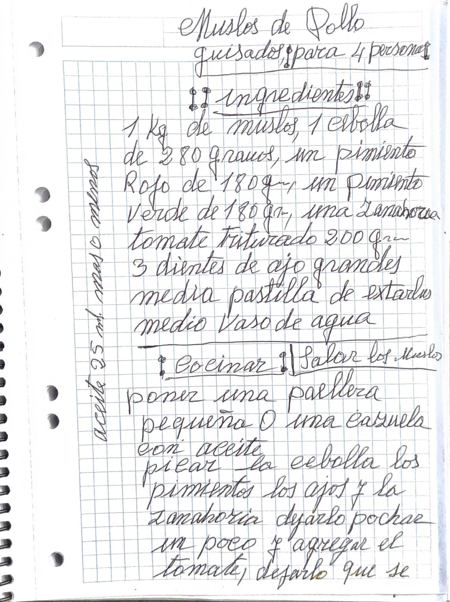
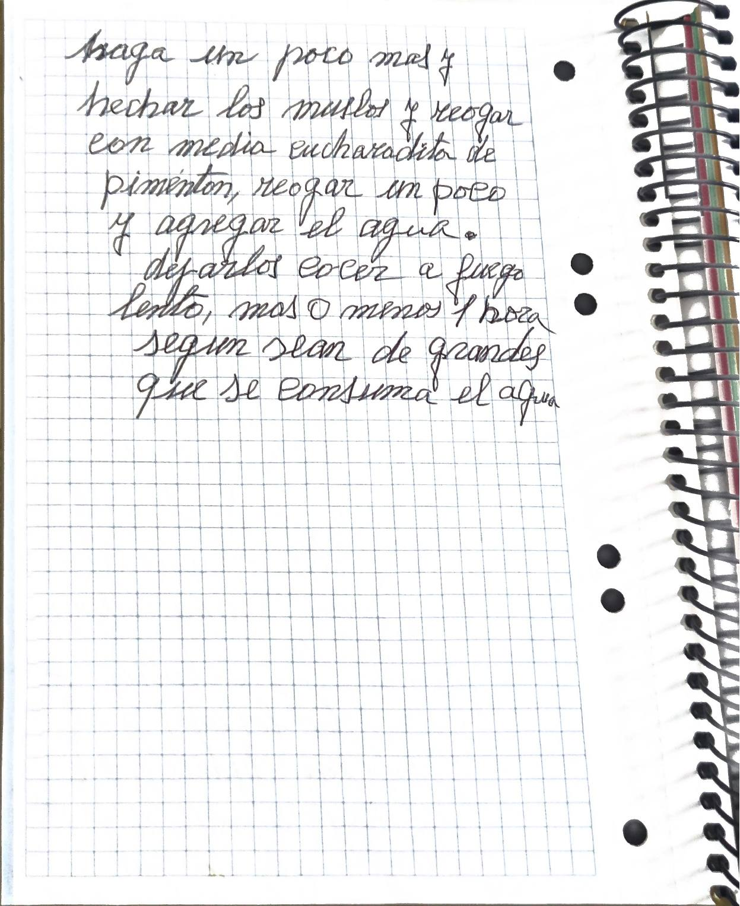

Versión editada para cocinar. Lo que ella escribió, palabra por palabra, está en «Cuaderno».

Transcripción fiel, con su ortografía. Lo que va entre corchetes son aclaraciones de la transcripción.
Muslos de Pollo guisados (para 4 personas)
(ingredientes)
1 Kg. de muslos, 1 cebolla de 280 gramos, un pimiento Rojo de 180 gr., un pimiento Verde de 180 gr., una Zanahoria tomate triturado 200 gr. 3 dientes de ajo grandes media pastilla de extarlus medio Vaso de agua
(Cocinar) | Salar los Muslos
poner una paellera pequeña O una cazuela con aceite picar la cebolla los pimientos los ajos y la Zanahoria dejarlo pochar un poco y agregar el tomate, dejarlo que se haga un poco mas y hechar los muslos y reogar con media cucharadita de pimenton, reogar un poco y agregar el agua. dejarlos cocer a fuego lento, mas o menos 1 hora segun sean de grandes que se consuma el agua
aceite 25 ml. mas o menos
Esta receta todavía no tiene fotos.